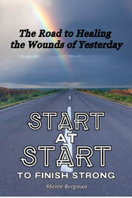

Start at Start to Finish Strong invites you to explore how the experiences of your past may still be shaping your life today—and how understanding those connections can become a meaningful part of your emotional and spiritual healing journey.
Have you ever wondered why certain situations affect you so deeply, why familiar struggles keep showing up in your relationships, or why moving forward feels difficult even when you want things to change? Sometimes the answers begin earlier in your story. Childhood experiences, relationships with caregivers, and needs that went unmet can influence what you believe about yourself, what you expect from others, and how you respond when you feel hurt, afraid, or rejected.
Through personal storytelling, biblical reflection, and insights drawn from her own healing journey, Sherée Bergman explores the lasting effects of emotional wounds. She shares how pain carried from childhood followed her into adulthood, where it continued to affect her choices, relationships, and sense of worth. With honesty about both her struggles and her growth, she offers readers encouragement to begin looking at their own stories with greater understanding and compassion.
At the heart of the book is an invitation to start at the start: to consider where painful beliefs and protective patterns may have begun. Responses that once helped you cope—such as withdrawing, trying to please everyone, staying constantly on guard, or putting your own needs aside—may eventually leave you feeling disconnected or stuck. Recognizing these patterns creates an opportunity to understand what you have been carrying and consider a different way forward.
The book encourages you to explore:
- The connection between childhood and adult life. Consider how early experiences may influence your beliefs, emotional responses, and relationships today.
- The effects of unmet emotional needs. Reflect on how a lack of consistent comfort, affection, acceptance, or security may have shaped the way you see yourself and others.
- The beliefs beneath familiar struggles. Begin noticing messages you may have absorbed about your worth, your needs, and whether it is safe to trust.
- The patterns you developed to protect yourself. Understand those responses with compassion while considering whether they still support the life and relationships you want.
- The role of faith in your healing journey. Explore what it means to bring your pain, questions, and beliefs before God and make room for His comfort and guidance.
- The possibility of meaningful change. Recognize that understanding your past can help you approach the present with greater awareness and choice.
Faith is woven throughout Sherée’s story. She describes how her relationship with Jesus Christ became a source of strength and hope through painful seasons, and how healing unfolded over time. Her story reflects the courage it can take to acknowledge hurt, receive support, question long-held beliefs, and learn to trust again.
This book does not ask you to pretend the past never happened or pressure you to have everything figured out. It invites you to acknowledge your experiences honestly, recognize their influence, and take your next steps at a pace that respects your needs. Starting at the beginning is an opportunity to understand your story more fully and discover what may still need care.
For readers who want to explore these themes more personally, the companion Start at Start Transformation Guide offers structured reflection and exercises. The Breakthrough Journal provides space to examine emotionally difficult moments and recognize connections between present reactions and earlier experiences. Together, these resources offer different ways to engage with the ideas introduced in the main book.
Whether you are beginning to recognize the effects of earlier wounds or have already spent time exploring your story, Start at Start to Finish Strong offers a personal, faith-centered perspective on emotional healing. Sherée’s message is one of hope: your pain deserves to be acknowledged, your story matters, and your past does not have to define every chapter ahead.